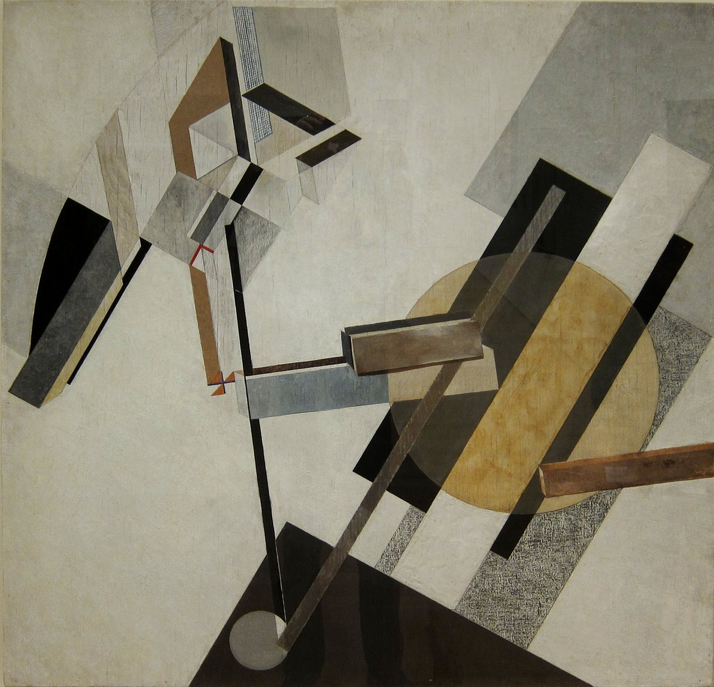
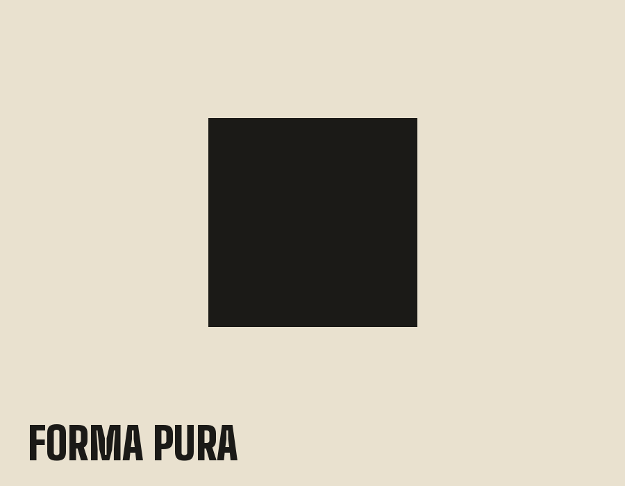

Museo de Arte Moderno Digital · Exposición virtual
Diálogosvanguardistas
Kazimir Malévich · El Lissitzky · Vladímir Tatlin · Aleksandr Ródchenko · Vasili Kandinsky · Gunta Stölzl · Marianne Brandt · László Moholy-Nagy · Joost Schmidt
■ Suprematismo × ▲ Constructivismo ruso × ● Bauhaus · 1915–1933
Cómo recorrer la muestra
Recorrido
Avanzá con las flechas del teclado, los botones de abajo o este índice. En cada obra, los botones ▲ ■ ● despliegan la ficha técnica, las búsquedas y cómo lo resuelve; también aparecen al pasar el mouse.
Ensayo curatorial
Por qué cruzar estas tres vanguardias
El Suprematismo, el Constructivismo ruso y la Bauhaus comparten la ruptura radical con el ilusionismo figurativo y el rechazo a la ornamentación del siglo XIX. Las tres vanguardias adoptaron las formas geométricas primarias y los colores puros como un vocabulario plástico universal, buscando construir un nuevo orden estético alineado con las transformaciones de la sociedad moderna.
El diálogo entre ellas refleja una fascinante trayectoria conceptual: la geometría nació como indagación contemplativa de la pura sensibilidad con Kasimir Malévich, se transformó en herramienta de propaganda e ingeniería social tras la Revolución Rusa y fue sistematizada racionalmente en el modelo pedagógico de la Bauhaus. A través de figuras fundamentales como El Lissitzky, Wassily Kandinsky y László Moholy-Nagy, las reflexiones abstractas soviéticas se integraron de manera directa al funcionalismo industrial alemán.
Esta confluencia histórica sentó las bases del diseño gráfico moderno como disciplina profesional rigurosa. Al abandonar la improvisación artesanal, estas vanguardias introdujeron la maquetación en grillas asimétricas, el uso normativo de tipografías sans-serif, la integración de la fotografía y la concepción de la pieza gráfica como un mensaje claro y funcional proyectado para la reproducción masiva.
Decisiones de diseño
Un catálogo hecho con sus códigos
Color
negrorojoamar.azullienzo
Negro y rojo de Malévich y del afiche soviético; los primarios de la Bauhaus; fondo de lienzo crudo.
Tipografía
Condensada de cartel
Instrument Sans para leer.
IBM Plex Mono para fichas y rótulos.
Forma y navegación
▲ ficha · ■ búsquedas · ● cómo lo resuelve. Las tres formas del cuestionario forma-color de Kandinsky (1923) funcionan como botones.
Grilla y movimiento
Sala I: las obras flotan sin grilla. Sala II: todo entra en diagonal. Sala III: retícula ortogonal y aparición por pasos.
Entre las salas
Puentes

Las ideas abstractas suprematistas evolucionaron hacia el diseño utilitario cuando Malévich y El Lissitzky impulsaron el colectivo UNOVIS en Vítebsk, aplicando la geometría a la propaganda política. Este lenguaje viajó a la Bauhaus mediante El Lissitzky, pionero de la maquetación asimétrica en rojo y negro, y por Wassily Kandinsky. Finalmente, el artista húngaro László Moholy-Nagy consolidó la impronta constructivista en la pedagogía alemana articulando tipografía y fotografía.
Diálogo I · elegí cómo mirar
Un cuadrado, tres idiomas
■ Suprematismo · flota
▲ Constructivismo · empuja
● Bauhaus · ordena
Comparar: la misma figura, el cuadrado, tratada con tres códigos distintos.
Las tres vanguardias adoptaron la geometría elemental como un código plástico universal para romper con el historicismo figurativo. Sin embargo, se distanciaron en sus propósitos: el Suprematismo la utilizó para la contemplación metafísica de la pura sensibilidad; el Constructivismo la transformó en una herramienta utilitaria de agitación política y producción industrial; y la Bauhaus la sistematizó racionalmente para el diseño de objetos cotidianos y piezas de comunicación visual.
Diálogo II · arrastrá el control
Arte puro / arte útil
En Blanco sobre blanco, la geometría constituye una indagación pictórica pura enfocada en la contemplación de la sensibilidad abstracta, sin finalidad práctica alguna. En cambio, en el infusor de té MT 49 de Marianne Brandt, las formas primarias abandonan el lienzo para convertirse en un objeto utilitario tridimensional. La Bauhaus transforma la geometría en la estructura funcional de un producto industrial, aplicando la máxima de que la forma sigue a la función.
Diálogo III · escribí una palabra
La palabra como imagen
El Constructivismo y la Bauhaus convirtieron la tipografía y la fotografía en un lenguaje gráfico común, adoptando composiciones asimétricas, fuentes de palo seco y bloques en rojo y negro. Mientras los constructivistas utilizaron el fotomontaje dinámico para crear carteles de agitación masiva, la Bauhaus aplicó la fototipografía al diseño editorial y a la publicidad. Inspirado por El Lissitzky, el tipógrafo Jan Tschichold sistematizó luego estos principios bajo el concepto de tipografía elemental.
Tocá cada marca
Línea de tiempo 1915–1933
Cierre
De la forma pura a la forma útil

El cuadrado (Malévich), la cuña (Lissitzky), el círculo y el triángulo (Bauhaus) se separan y se vuelven a encontrar.
Manifiesto sonoro
Cada forma tiene su sonido. Tocalas o componé el manifiesto completo.
Créditos digitales
Créditos
Diseño y curaduría
Renata Simone y Federico Ignacio Soliz Espinosa
Historia del Diseño · 2.º año · Tecnicatura en Diseño Gráfico · 2026
Prof. Agostina Russo
Bibliografía
- Accenture. (s. f.). Fundamentos del diseño gráfico: 1. Historia del diseño gráfico. Accenture.
- Alcaide, C. (1997). El arte concreto en Argentina: Invencionismo, Madí, Perceptismo. Arte, Individuo y Sociedad, (9).
- Cátedra de Historia del Diseño. (2026). Constructivismo [Video]. Instituto Superior de Arte y Creatividad de Pilar. Google Classroom.
- Cátedra de Historia del Diseño. (2026, 9 de octubre). Bauhaus [Video de clase asincrónica]. Instituto Superior de Arte y Creatividad de Pilar. Google Classroom.
- Dubrovsky, L. (2018). Movimientos artísticos 1900-1950: Vanguardias históricas. Universidad de Flores.
- Satué, E. (1988). El diseño gráfico: Desde los orígenes hasta nuestros días. Alianza Editorial.
- Taranilla de la Varga, C. J. (2014). Breve historia del arte. Ediciones Nowtilus.
- Universidad SUDS. (s. f.). Historia del diseño gráfico [Material de lectura].